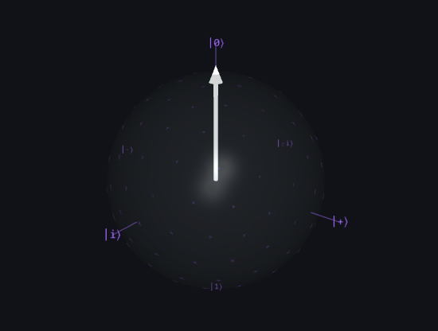

Fundada no alvorecer da década de 2020 por um coletivo de físicos teóricos e engenheiros de hardware, a Quantum Nexus nasceu de uma ambição singular: estabilizar a coerência quântica fora de laboratórios isolados. O que começou como uma pesquisa acadêmica se tornou o primeiro ecossistema comercial de computação híbrida do mundo.
Entendendo os Qubits

Esfera de Bloch: Enquanto um bit clássico fica nos polos (0 ou 1), o Qubit navega por toda a superfície da esfera.
Diferente da computação clássica que utiliza bits (0 ou 1), nossos processadores utilizam Qubits. Graças às propriedades da Superposição e do Emaranhamento Quântico, um Qubit pode representar 0, 1, ou ambos simultaneamente. Isso permite que a Quantum Nexus processe milhões de possibilidades em paralelo, resolvendo cálculos que levariam milênios em supercomputadores tradicionais.
Nossa Missão
Democratizar o acesso ao poder computacional de próxima geração. Acreditamos que os desafios globais mais urgentes — das mudanças climáticas ao dobramento de proteínas — não serão resolvidos por máquinas que pensam de forma linear, mas por sistemas que abraçam a complexidade fundamental do universo.